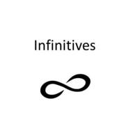

Basic Sentences
14.1 qui sunt adfecti gravioribus morbis quique in proeliis periculisque versantur, aut (Galli) pro victimis homines immolant aut se immolaturos vovent.
(Caesar DBG 6.16 slightly adapted. Caesar discusses the Gallic custom of human sacrifice.)
14.2 obsides sese daturos quaeque imperasset facturos polliciti sunt.
(Caesar DBG 4.27. Caesar makes arrangements for hostage exchange.)
14.3 Laocoon ardens summa decurrit ab arce,
et procul 'o miseri, quae tanta insania, cives?
creditis avectos hostis? aut ulla putatis
dona carere dolis Danaum?
(Vergil 2.41-44. Laocoon tries to warn the Trojans)
(Laocoon)
Topics this Chapter
3. Vocabulary

(The Gallic Wicker Man)
Infinitive Forms
In order to learn about indirect statement, you have to learn all of the forms of this infinitive, which we will learn now. Some of these forms are review from previous chapters (the present active and passive infinitives) and the remaining are new information.
In Latin there are a total of five forms of the infinitive. These forms can be split into three categories: Two forms in the present tense, two forms in the perfect tense, and one in the future.

The present tense infinitives have already been introduced, but let’s take a quick chance to review them.
Present Active
The present active infinitive can be found in the dictionary entry. It IS the 2nd principal part of the entry and is translated as “to verb”.
Present active infinitive = 2nd principal part Ex: amare = to love |
Present Passive
The present passive infinitive can be constructed very easily by removing the final “e” from the active form and adding an “i”. This form is translated as “to be verbed”. There is an exception to this rule which occurs in 3rd conjugation verbs. In 3rd conjugation the whole “ere” is removed instead of just the final “e” before adding the “i”.
Present passive infinitive = 2nd principal part- “e” + “i” Ex: amari = to be loved -------------------------------------- 3rd conjugation exception* Present passive infinitive = 2nd principal part- “ere” + “i” Ex: regi = to be ruled |
Let’s move on to the new infinitives. Two of the last three can be grouped together. There is the perfect active and the perfect passive infinitive. At least there are no exceptions to the rule for these infinitives!
Perfect Active
The perfect active infinitive is formed by taking the perfect tense stem (which is the 3rd principal part minus the “i”) and adding the ending “isse”. The word “have” is going to be used to translate this form just as it was used when you learned the perfect tense a few chapters ago. It should be read as “to have verbed”
Perfect active infinitive = perfect stem + “isse” Ex: amavisse = to have loved |
Perfect Passive Infinitive
Just like all perfect verbs that are passive, perfect passive infinitives will be made up of two words. The first word is the 4th principal part. The second is the word “esse”, because “esse” is the infinitive of the verb “sum”. Also, just like when you learned the perfect passive verb system you learned that passive verbs would make sense when “by pirates” was added after. The same goes here. Just add the word “been” to your translation from the perfect active form and you’re done!
Perfect passive infinitive = 4th part + esse Ex: amatum esse = to have been loved |
Future Active Infinitive
The future active infinitive is easily formed. This form is made up of two words just like the perfect passive. The only difference is that the 1st word of the pair is now going to be the FAP. The translation of this form goes as follows: “to be about to verb”.
Future active infinitive = FAP + esse Ex: amaturum esse = to be about to love |
There is technically a future passive infinitive. In fact it even appears in the AP syllabus lines of Caesar. However, it is extremely rare, and will not be taught here.
The Complete Story of Infinitives.
A well made chart always simplifies things for many students so below you will see a verb from each conjugation and an example of each infinitive type for each verb.
1st Conj | 2nd Conj | 3rd Conj | 4th Conj | |
Present Active | amare | videre | regere | punire |
Present Passive | amari | videri | regi * | puniri |
Perfect Active | amavisse | vidisse | rexisse | punivisse |
Perfect Passive | Amatum esse | Visum esse | Rectum esse | Punitum esse |
Future Active | Amaturum esse | Visurum esse | Recturum esse | Puniturum esse |
WATCH THIS VIDEO FOR INFINITIVE REVIEW
Indirect Statement
Welcome to Latin! Indirect statement is crucial to understanding and mastering Latin. Indirect statement finds its way into so many parts of Latin texts that it is hard to count. It could easily be said that all the information you’ve learned up to this point combined is as important as this section so please, NOTA BENE!!
Direct and indirect speech can be a source of confusion for English learners. Let's first define the terms, then look at how to talk about what someone said, and how to convert speech from direct to indirect or vice-versa.
You can answer the question What did he say? in two ways:
by repeating the words spoken (direct speech using a quotation)
by reporting the words spoken (indirect or reported speech).
EXAMPLES OF DIRECT SPEECH
She says, "What time will you be at work?"
She said, "What time will you be home?" and I said, "I don't know! "
"There's a fly in my drink!" screamed Simone.
John said, "There's a giraffe outside of my window."
Notice, all of these examples use quotations. Now, in Latin this would be difficult because the Romans didn’t use much if any punctuation (though modern editors have added it) and they for sure don’t use anything like quotations marks. This does not mean, however, that the Romans didn’t use direct speech, for they surely did. You will see direct speech used frequently in things like plays. So, if you ever read any Terence or Plautus, then be prepared for that. Most of the authors that are covered in a high school curriculum will used indirect speech more frequently.
INDIRECT SPEECH (Indirect Statement)
Reported or indirect speech is usually used to talk about the past, so we normally change the tense of the words spoken. We use reporting verbs like 'say', 'tell', 'ask', and we may use the word 'that' to introduce the reported words. Quotation marks are not used.
EXAMPLES
She said that she had seen him.
The reporter said that the criminal was found.
The police officer saw that there was no murder weapon.
I hear that there is pizza for lunch today.
You may notice that all of these sentences have the word “that” in common. In English it is common to leave this word out and it will mean the same thing. Just to keep things simple though every time you see an indirect statement in Latin you SHOULD use the word “that” in your translation.
Indirect statements are considered noun clauses because the entire clause is acting as the direct object of the main verb. Think about the first example above: She said that she had seen him. The subject is “She”, the verb is “said” but what is the object? The answer is the WHOLE remaining clause “that she had seen him.”
THE RULES
Every indirect statement in Latin will have the following three things:
A verb of the head (think, hear, say, tell, imagine, etc.) The subject of the indirect statement clause will be in the accusative case The verb of the indirect statement clause will be an infinitive **Special note: “esse” is sometimes omitted from the infinitive in these forms. In those cases, depend on the context to alert you to the possibility that you may have an infinitive form. |
The main thing to notice here is there is no word for “that” like there is used in English. This makes things particularly difficult because it is the word “that” that most readers rely on to know that they are even reading an indirect statement. It is the subordinating conjunction. So if there is no Latin word for “that” in these instances what do we do? The answer is that if you have all three of the things from the table above then you must imply the word “that” in your translation.
Let’s look at an extremely easy example.
Vir dicit puerum amare puellam.
This sentence above has an indirect statement in it. Do you see the infinitive? Do you see the verb of the head and the accusative being used as a subject?
Vir dicit [puerum amare puellam.]
Now, you’ll notice that in the annotated version above I have bracketed off the indirect statement. The verb of the head is “dicit”, the word “puerum” is an accusative noun, and “amare” is an infinitive. With all of these clues you have all the evidence you need. You might notice that I have highlighted the brackets in a blue color. This is because the whole clause from end to end is acting as the direct object of the verb “dicit”. Inside of the brackets you will need a new subject (now in the accusative case), verb, and maybe a direct object.
The man says [that the boy loves the girl.]
Note that I have implied the word “that” in my translation. You might also ask this: aren’t the subject AND the object inside of this clause in the accusative case? The answer is YES! Well, with Latin’s word order flexibility this has the potential to create a lot of ambiguity. However, in most cases either context will make it very clear which is the subject or you can usually rely on the fact that the first noun in the accusative is the subject.
**A quick note on the word “se”. If the reflexive pronoun “se” is used in an indirect statement it will alway be referring back to the original subject, Here’s an example:
Puella dicit se in via ambulare.
The girl says that she is walking on the road.
Notice that the word “she” is referring back the girl.
Relative Time in Indirect Statement
Now that the basics of indirect statement have been introduced, it is time to complicate things. Earlier in this chapter you were given the five forms of the infinitives. Each of these forms can be used in indirect statements and each of them can have a different interpretation depending on what tense the main verb is in. In all of the examples above, the action of the main verb and the infinitive have happened at the same time as each other. In that instance the present infinitives will be uses. This will not always be the case though. If the action of the infinitive had happened before that of the main verb, Latin would have used a perfect infinitive; if the action was expected, but hadn’t happened yet, Latin would have used a future infinitive.
The pattern showing the relation between the time of the main verb and the tense of the infinitive fits a pattern.
Time Before | Same Time | Time After |
Perfect Infinitive | Present Infinitive | Future Infinitive |
Ex: amavisse/amatum esse | Ex: amare/amari | Ex: amaturum esse |
Remember, the infinitive that is used doesn’t indicate that actual time of the action, just the relative time of the action compared to the main verb.
Consider the following examples:
Time of Main Verb | Relative Time | ||
Present | Dico eum venisse. | I say that he arrived. | Before |
Dico eum venire. | I say that he is arriving. | Same | |
Dico eum venturum esse. | I say that he will arrive. | After | |
Past | Dixi eum venisse. | I said that he had arrived. | Before |
Dixi eum venire. | I said that he arrived. | Same | |
Dixi eum venturum esse. | I said that he would arrive. | After |
Let’s take a look at one of the Basic Sentences to see an example in authentic Latin.
14.3 Laocoon ardens summa decurrit ab arce,
et procul 'o miseri, quae tanta insania, cives?
creditis avectos hostis? aut ulla putatis
dona carere dolis Danaum?
The chunk is long so let’s delve down into just the last actual sentence with the indirect statement.
aut ulla putatis [dona carere dolis Danaum]?
Or do you think [that any gifts of the Greeks are free from tricks]
There are a couple of things you might notice about this sentence. The first is that the word “that” is used in English but there is no analogue for it in Latin. It must be implied based on the fact that indirect statement exists. The second issue is that the adjective “ulla” has leaked out of the indirect statement. The is something that would not normally happen in prose authors like Caesar, but in poetry it happens frequency and for a variety of reasons. It may have happened that the words fit the meter or rhythm of the line or it could have been for emphasis. Either way, English also does similar things in our own poetry. The important thing to remember is that there are rules in Latin, but as in any language, the rules can and are often broken.
Let’s try one more Basic Sentence
14.2 [obsides sese daturos] [[quaeque imperasset] facturos] polliciti sunt.
They promised [that they would give hostages] and [that they would do [what he had ordered]].
This sentence is short but FILLED with complicated grammatical information. Let’s begin with the main verb, “polliciti sunt”. This verb sets up two separate indirect statements connected by the word “-que”. Both of these indirect statements act as the direct object of the verb. This is why I have colored the brackets in blue; they are acting like an accusative noun. Inside of the second indirect statement there is a relative clause started by the word “quae”. That relative clause is acting as the direct object of the verb “facturos”. Please also note that both of the infinitives used in these clauses are missing the word “esse” which is relatively common as was noted earlier.
WATCH THIS VIDEO FOR INDIRECT STATEMENT HELP
Vocabulary Flash Cards
Word | Definition |
Morbus, i m | Sickness/disease |
Impero, are, avi , atum | To command |
Ardeo, ere, arsi , arsum | To burn/be eager |
Procul | At a distance |
Civis, civis m/f | Citizen |
Donum, i n | Gift |
Careo, ere, ui | To lack + abl |
Dolus, i m | trick |
Moneo, monere, monui, monitum | To warn |
Nego, are, avi, atum | To deny |
Spero, are, avi , atum | To hope |
Cognosco, ere, cognovi, cognitum | To learn/understand |
Nescio, ire, nescivi, nescitum | To not know |
Intellego, ere, intellexi, intellectum | To understand |
Sentio, sentire, sensi, sensum | To perceive/feel |
Sanguis, sanguinis m | Blood |
Vis f (not fully declinable) | Force /power |
Genus, generis n | Origin/kind |
Mens, mentis f | Mind |
Nemo (neminem acc) | No one |